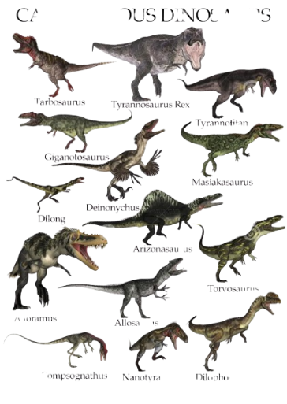
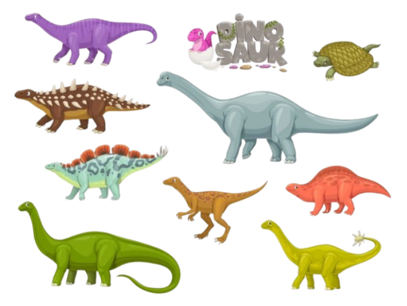

Los dinosaurios son un vasto y diverso grupo de animales prehistóricos extintos, que surgieron en nuestro planeta hace alrededor de 231 y 243 millones de años. Su nombre proviene del griego deinos, “terrible”, y sauros, “lagarto”.
De su existencia sólo quedan evidencias en el registro fósil geológico. Sin embargo, a través de décadas de estudio de estos hallazgos paleontológicos y gracias a un creciente entendimiento científico de los procesos físicos, químicos y bióticos de la Tierra, hemos podido aprender mucho sobre el reinado de estos animales, entre los cuales estuvieron los mayores vertebrados que jamás han existido.
La historia de los dinosaurios comienza en un punto incierto del período geológico triásico, parte inicial de la era Mesozoica o Secundaria (desde hace 251 millones de años hasta hace 66 millones de años, aproximadamente). En esta era ocurrieron inmensos cambios en la distribución continental del planeta (por ejemplo, la separación del supercontinente Pangea) y, por lo tanto, en el clima planetario y en las formas biológicas. Los dinosaurios, así, surgieron en un mundo mucho más cálido y de mucha mayor concentración de oxígeno en la atmósfera que el actual.

Clasificacion
Los dinosaurios (incluyendo las aves) son arcosaurios, como los cocodrilos modernos. Los cráneos diápsidos de los arcosaurios tienen dos agujeros localizados donde se atan los músculos de la mandíbula, llamado fenestra temporal. La mayor parte de reptiles (incluyendo a las aves) son diápsidos. Los mamíferos, con solo una fenestra temporal, son llamados sinápsidos; y las tortugas, sin fenestra temporal, son anápsidos. Anatómicamente, los dinosaurios comparten muchas otras características de arcosaurio, incluidos los dientes que nacen de alvéolos más bien que como las extensiones directas de las mandíbulas. Dentro del grupo Archosauria, los dinosaurios son diferenciados más perceptiblemente por su paso. Las patas de los dinosaurios se extienden directamente bajo el cuerpo y son rectas, mientras que las patas de lagartos y cocodrilos se extienden hacia fuera, sobresaliendo.
| Clasificacion | Imagen con Ejemplos |
|---|---|
| Carnivoros |  |
| Herbivoros |  |